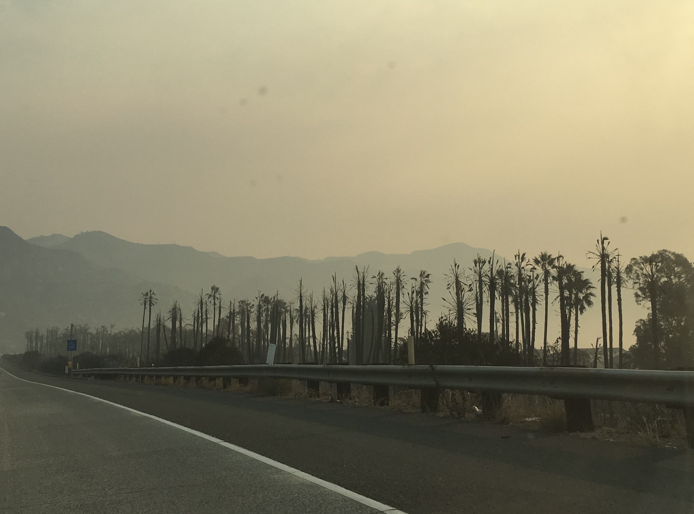

# import libraries
import os
import numpy as np
import pandas as pd
import geopandas as gpd
import matplotlib.pyplot as plt
import matplotlib.patches as mpatches # for creating legends
import matplotlib.lines as mlines
import xarray as xr
import rioxarray as rioxr
from shapely.geometry import box
from shapely.geometry import PointLink to project repository: https://github.com/shmuir/california-fire-AQI
Project Overview
In December of 2017 the Thomas Fire spread across Santa Barbara and Ventura counties in California, burning nearly 282,000 acres (Oakley et al. 2018). It damaged many natural and developed areas and was spread rapidly by strong winds. Air quality during the time of the fire was quite bad and many schools cancelled classes due to the air quality concerns, along with the power outages.

A photo taken along highway 101 showing burned palm trees and a hazy sky from fire smoke. This picture was taken December 13th, 2017 by me.
Highlights of Analysis
In this blog post I will be:
Fetching and cleaning raster and tabular data
Visualizing the extent of the burn areas from the Thomas Fire in Santa Barbara County in 2017
Analyzing the change in air quality in Santa Barbara County across 2017-2018.
About the Data
ca_fires: shapefile of fire perimeters in California for 2017
landsat: simplified collection of bands (red, green, blue, near-infrared and shortwave infrared)
aqi_2017: air quality index data from 2017
aqi_2018: air quality index data from 2018
Data Sources
The Thomas fire shapefile was obtained from California State Geoportal.
Santa Barbara landsat data was accessed and pre-processed in the Microsoft Planetary Computer to remove data outside land and coarsen the spatial resolution (Landsat Collection in MPC).
The Air Quality Index (AQI) was obtained from the US Environmental Protection Agency.
Reading in the Data
# california fires data
ca_fires = gpd.read_file(os.path.join(os.getcwd(), 'data', 'California_Fire_Perimeters_2017', 'California_Fire_Perimeters_2017.shp'))
# landsat data
landsat = rioxr.open_rasterio(os.path.join(os.getcwd(),'data','landsat8-2018-01-26-sb-simplified.nc'))
# air quality data
aqi_2017 = pd.read_csv("https://aqs.epa.gov/aqsweb/airdata/daily_aqi_by_county_2017.zip")
aqi_2018 = pd.read_csv("https://aqs.epa.gov/aqsweb/airdata/daily_aqi_by_county_2018.zip")Visualizing Thomas Fire Burn Area
We want to look at the extent of the Thomas Fire in Santa Barbara County. We will do this by plotting the false color imagery from the landsat data and adding the fire borders from the California fires data.
First, we will need to prepare our data a bit more by
dropping a dimension from the landsat data
updating the coordinate references systems to match
selecting data for only the Thomas Fire
# drop 'band' from landsat data
landsat = landsat.squeeze()
landsat = landsat.drop('band')
# update CRS of ca_fires to match the CRS of landsat
ca_fires = ca_fires.to_crs(landsat.rio.crs)
# select only the thomas fire
thomas_fire_border = ca_fires.loc[ca_fires.FIRE_NAME == "THOMAS"]Now it’s time to plot!
fig, ax = plt.subplots(figsize=(12,8)) # initialize plot
ax.axis("off") # remove axis
landsat[['swir22', 'nir08', 'red']].to_array().plot.imshow(robust=True, ax= ax)
thomas_fire_border.plot(ax=ax, fc = 'none', edgecolor = "red", linewidth = 1.5) # plot thomas fire ontop of landsat image
fires_patch = mpatches.Patch(color='red', # change color to red
label='Thomas Fire') # update label
ax.legend(handles = [fires_patch], frameon=False, loc = (0.75, 0.95), labelcolor = 'white') # add legend and update text color
plt.show()
Here we can see the large are that the Thomas Fire burned in the spatial context of Santa Barbara County. The red border shows the extent of the fire, and from the Landsat imagery, we can see the burn scar on the land.
Air Quality Index Time Series
Now that we have visualized the extent of the Thomas Fire in Santa Barbara County, we want to look at the change in air quality from before, during, and after the fire. The air quality index data is for all of the US, so we will need to select data for only Santa Barbara County. Additionally, we will calculate a 5 day rolling averge of the air quality index.
Again, we need to prepare the data before plotting. To do this, we will
combine the 2017 and 2018 data frames
clean up the column names
convert the date to a datetime object
calculate 5 day rolling means
# combine the two dataframes
aqi = pd.concat([aqi_2017,aqi_2018])
# make the column names lower snake case
aqi.columns = aqi.columns.str.lower().str.replace(' ','_')
# filter to only have SB county and drop other columns we don't need
aqi_sb = aqi[aqi['county_name'] == 'Santa Barbara'].drop(columns = ['state_name', 'county_name', 'state_code', 'county_code'])
# make the date column a datetime instead of object data type
aqi_sb.date = pd.to_datetime(aqi_sb.date)
# set the date to be the index
aqi_sb = aqi_sb.set_index('date')
# calculate rolling 5D means of the aqi as a new column in the df
aqi_sb['five_day_average'] = aqi_sb.aqi.rolling('5D').mean()Now we’re ready to plot!
# plot the results of rolling means and the raw aqi
aqi_sb.plot(y = ['aqi', 'five_day_average'],# both on same axis
kind = 'line', # line plot
ylabel = 'Air Quality Index', # update label
xlabel = '', # leave x-label blank
color = ['pink', 'grey'], # update to more visible colors
title = 'Air Quality Index in Santa Barbara County 2017-2018') # add a title<Axes: title={'center': 'Air Quality Index in Santa Barbara County 2017-2018'}, ylabel='Air Quality Index'>This plot shows a clear spike in AQI (indicating a worse air quality) during the Thomas Fire.
References
Oakley, Nina S., Forest Cannon, Robert Munroe, Jeremy T. Lancaster, David Gomberg, and F. Martin Ralph. 2018. “Brief Communication: Meteorological and Climatological Conditions Associated with the 9 January 2018 Post-Fire Debris Flows in Montecito and Carpinteria, California, USA.” Natural Hazards and Earth System Sciences 18 (11): 3037–43. https://doi.org/10.5194/nhess-18-3037-2018.
Citation
BibTeX citation:
@online{muir2023,
author = {Muir, Sam},
title = {The {Thomas} {Fire} in {Santa} {Barbara} {County} 2017-2018},
date = {2023-12-05},
url = {https://shmuir.github.io/projects/2023-12-05-fire-aqi/},
langid = {en}
}
For attribution, please cite this work as:
Muir, Sam. 2023. “The Thomas Fire in Santa Barbara County
2017-2018.” December 5, 2023. https://shmuir.github.io/projects/2023-12-05-fire-aqi/.